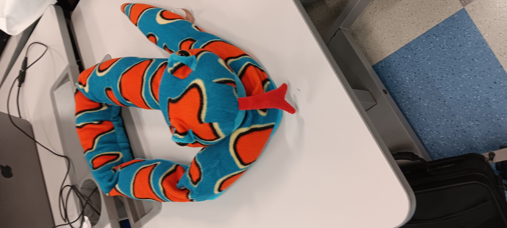

As you can probably tell I am going to be talking all about snakes and anything I know about them. This very much should not be considered a non-bias source as I am very much bias that snakes are awesome.

Snakes as you can probably guess are best known for slithering around as they do not have legs. Snakes are also well known for being evil in most forms of media because they are represented as untrustworthy and deceiving. Snakes are also well known for eating small vermin like mice, rats, and other rodents. Snakes are also cold blooding so they don’t produce their own body heat and they rely on the suns heat to stay warm. Snakes smell with their tounge as they don’t have noses. Snakes don't chew their food and swallow their food whole. Once a month they shed their skin. Most snakes lay eggs and only very few give birth.
There are about 70 species of snakes that live in the Indian and Pacific Ocean. There are over 700 species of venomous snake in the world. Pythons do not have fangs like venomous snakes. They have up to 80 small needle sharp recurved teeth. Snakes do not have eyelids. Venomous snakes have special glands and teeth designed to inject venom into whatever they bite. Theire is 1 species of snakes that instead of scales there is skin.

Snkaes can be some of the cutest things ever. Like you can look at thgeir face and instantly fall in love with how cute they are. It is impossible to make me think otherwise.
| King Cobras | Ball Python | Mambas | Boa constrictor | Corn snake | Elapidae snake | |
|---|---|---|---|---|---|---|
| Striped scales | X | X | ||||
| Spoted Scales | X | X | X | |||
| Fangs | X | X | X | X | X | |
| neck-flap | X | X |